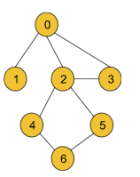
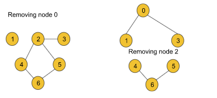
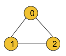
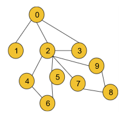

Problem Statement: Given an undirected connected graph with V vertices and adjacency list adj. You are required to find all the vertices removing which (and edges through it) disconnect the graph into 2 or more components.
Note: Indexing is zero-based i.e nodes numbering from (0 to V-1). There might be loops present in the graph.
Before moving on to the solution, we need to understand the definition of the articulation point of a graph.
Articulation Point:
Articulation Points of a graph are the nodes on whose removal, the graph breaks into multiple components.
Example:

For the above graph node 0 and node, 2 are the articulation points. If we remove either of the two nodes, the graph breaks into multiple components like the following:

But node 3 is not an articulation point as this node’s removal does not break the graph into multiple components.
In order to find all the articulation points of a graph, we will implement some logic over the DFS algorithm. This is more of an algorithm-based approach. So, let’s discuss the algorithm in detail. Before that, we will discuss the two important concepts of the algorithm i.e. time of insertion and lowest time of insertion.
Time of insertion: Dring the DFS call, the time when a node is visited, is called its time of insertion. For example, if in the above graph, we start DFS from node 0 it will visit node 1 first then node 2, node 3, and so on. So, the time of insertion for node 0 will be 1, node 1 will be 2, node 2 will be 3 and it will continue like this. We will use a time array to store the insertion time for each node. This definition remains the same as it was during the bridge problem.
Lowest time of insertion: In this case, the current node refers to all its adjacent nodes except the parent and the visited nodes and takes the minimum lowest time of insertion into account. To store this entity for each node, we will use another ‘low’ array. The difference in finding the lowest time of insertion in this problem is that in the bridgealgorithm, we only excluded the parent node but in this algorithm, we are excluding the visited nodes along with the parent node.
The logical modification of the DFS algorithm is discussed below:
To find out the bridges in the bridge problem, we checked inside the DFS, if there exists any alternative path from the adjacent node to the current node. But here we cannot do so as in this case, we are trying to remove the current node along with all the edges linked to it. For that reason, here we will check if there exists any path from the adjacent node to the previous node of the current node. In addition to that, we must ensure that the current node we are trying to remove must not be the starting node.
The check conditions for this case will change like the following: if(low[it] > tin[node]) converts to if(low[it] >= tin[node] && parent != -1)
For the starting node, we will apply different logic.
The logic for the starting node:
If the node is a starting point we will check the number of children of the node. If the starting node has more than 1 child(The children must not be connected), it will definitely be one of the articulation points.
To find the number of children, we will generally count the number of adjacent nodes. But there is a point to notice. In the following graph, the starting node 0 has two adjacent nodes, but it is not an articulation point.

To avoid this edge case, we will increment the number of children only if the adjacent node is not previously visited(i.e. child++ will be inside the not visited if statement).
We can get a single node as an articulation point multiple times:
If we carefully observe, we can easily notice that we can get a single node as the articulation point multiple times. For example, consider the following graph:

While checking for node 2, we will get the node as the articulation point once for the first component that contains nodes 4, 5, and 6 and we will again get the same node 2 for the second component that includes the nodes 7, 8, and 9.
To avoid the storing of duplicate nodes, we will store the nodes in a hash array(i.e. mark array used in the code) instead of directly inserting them in a simple array.
Approach:
The algorithm steps are as follows:
First, we need to create the adjacency list for the given graph from the edge information(If not already given). And we will declare a variable timer(either globally or we can carry it while calling DFS), that will keep track of the time of insertion for each node. The timer may be initialized to 0 or 1 accordingly.
Then we will perform DFS for each component. For each component, the starting node will carry -1 as its parent.
Inside DFS, we will first mark the node visited and then store the time of insertion and the lowest time of insertion properly. We will declare a child variable to implement the logic for starting node.
Now, it’s time to visit the adjacent nodes.
If the adjacent node is the parent itself, we will just continue to the next node.
If the adjacent node is not visited, we will call DFS for the adjacent node with the current node as the parent. After the DFS gets completed, we will compare the lowest time of insertion of the current node and the adjacent node and take the minimum. Now, we will check if the lowest time of insertion of the adjacent node is greater or equal to the time of insertion of the current node and also ensure that the current node is not the starting node(checking parent not equal -1). If the condition matches, then we will mark the current node in our hash array as one of our answers as it is one of the articulation points of the graph. Then we will increment the child variable by 1.
If the adjacent node is visited, we will just compare the lowest time of insertion of the current node and the time of insertion of the adjacent node and take the minimum.
Finally, we will check if the child value is greater than 1 and if the current node is the starting node. If it is then we will keep the starting node marked in our hash array as the starting node is also an articulation point in this case.
Finally, our answer array will store all the bridges.
Note: We are not considering the parent and the visited nodes during calculating the lowest insertion time as they may be the articulation points of the graph which means they may be the nodes we intend to remove.
Note: If you wish to see the dry run of the above approach, you can watch the video attached to this article.
Code:
#include <bits/stdc++.h>
using namespace std;
//User function Template for C++
class Solution {
private:
int timer = 1;
void dfs(int node, int parent, vector<int> &vis, int tin[], int low[],
vector<int> &mark, vector<int>adj[]) {
vis[node] = 1;
tin[node] = low[node] = timer;
timer++;
int child = 0;
for (auto it : adj[node]) {
if (it == parent) continue;
if (!vis[it]) {
dfs(it, node, vis, tin, low, mark, adj);
low[node] = min(low[node], low[it]);
if (low[it] >= tin[node] && parent != -1) {
mark[node] = 1;
}
child++;
}
else {
low[node] = min(low[node], tin[it]);
}
}
if (child > 1 && parent == -1) {
mark[node] = 1;
}
}
public:
vector<int> articulationPoints(int n, vector<int>adj[]) {
vector<int> vis(n, 0);
int tin[n];
int low[n];
vector<int> mark(n, 0);
for (int i = 0; i < n; i++) {
if (!vis[i]) {
dfs(i, -1, vis, tin, low, mark, adj);
}
}
vector<int> ans;
for (int i = 0; i < n; i++) {
if (mark[i] == 1) {
ans.push_back(i);
}
}
if (ans.size() == 0) return { -1};
return ans;
}
};
int main() {
int n = 5;
vector<vector<int>> edges = {
{0, 1}, {1, 4},
{2, 4}, {2, 3}, {3, 4}
};
vector<int> adj[n];
for (auto it : edges) {
int u = it[0], v = it[1];
adj[u].push_back(v);
adj[v].push_back(u);
}
Solution obj;
vector<int> nodes = obj.articulationPoints(n, adj);
for (auto node : nodes) {
cout << node << " ";
}
cout << endl;
return 0;
}
Output: 1 4 (Example 2)
Time Complexity: O(V+2E), where V = no. of vertices, E = no. of edges. It is because the algorithm is just a simple DFS traversal.
Space Complexity: O(3V), where V = no. of vertices. O(3V) is for the three arrays i.e. tin, low, and vis, each of size V.
import java.io.*;
import java.util.*;
class Solution {
private int timer = 1;
private void dfs(int node, int parent, int[] vis,
int tin[], int low[], int[] mark,
ArrayList<ArrayList<Integer>> adj) {
vis[node] = 1;
tin[node] = low[node] = timer;
timer++;
int child = 0;
for (Integer it : adj.get(node)) {
if (it == parent) continue;
if (vis[it] == 0) {
dfs(it, node, vis, tin, low, mark, adj);
low[node] = Math.min(low[node], low[it]);
// node --- it
if (low[it] >= tin[node] && parent != -1) {
mark[node] = 1;
}
child++;
} else {
low[node] = Math.min(low[node], tin[it]);
}
}
if (child > 1 && parent == -1) {
mark[node] = 1;
}
}
//Function to return Breadth First Traversal of given graph.
public ArrayList<Integer> articulationPoints(int n,
ArrayList<ArrayList<Integer>> adj) {
int[] vis = new int[n];
int[] tin = new int[n];
int[] low = new int[n];
int[] mark = new int[n];
for (int i = 0; i < n; i++) {
if (vis[i] == 0) {
dfs(i, -1, vis, tin, low, mark, adj);
}
}
ArrayList<Integer> ans = new ArrayList<>();
for (int i = 0; i < n; i++) {
if (mark[i] == 1) {
ans.add(i);
}
}
if (ans.size() == 0) {
ans.add(-1);
}
return ans;
}
}
class Main {
public static void main (String[] args) {
int n = 5;
int[][] edges = {
{0, 1}, {1, 4},
{2, 4}, {2, 3}, {3, 4}
};
ArrayList<ArrayList<Integer>> adj = new ArrayList<>();
for (int i = 0; i < n; i++) {
adj.add(new ArrayList<Integer>());
}
for (int i = 0; i < n; i++) {
int u = edges[i][0], v = edges[i][1];
adj.get(u).add(v);
adj.get(v).add(u);
}
Solution obj = new Solution();
ArrayList<Integer> nodes = obj.articulationPoints(n, adj);
int size = nodes.size();
for (int i = 0; i < size; i++) {
int node = nodes.get(i);
System.out.print(node + " ");
}
System.out.println("");
}
}
Output: 1 4 (Example 2)
Time Complexity: O(V+2E), where V = no. of vertices, E = no. of edges. It is because the algorithm is just a simple DFS traversal.
Space Complexity: O(3V), where V = no. of vertices. O(3V) is for the three arrays i.e. tin, low, and vis, each of size V.
Special thanks to KRITIDIPTA GHOSH for contributing to this article on takeUforward. If you also wish to share your knowledge with the takeUforward fam, please check out this article. If you want to suggest any improvement/correction in this article please mail us at write4tuf@gmail.com